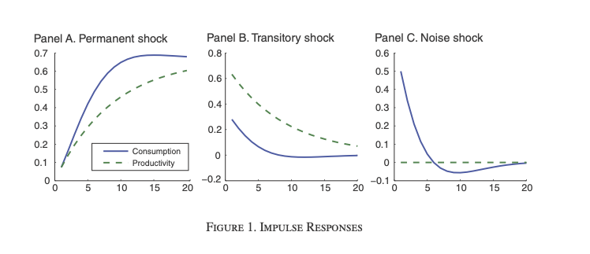
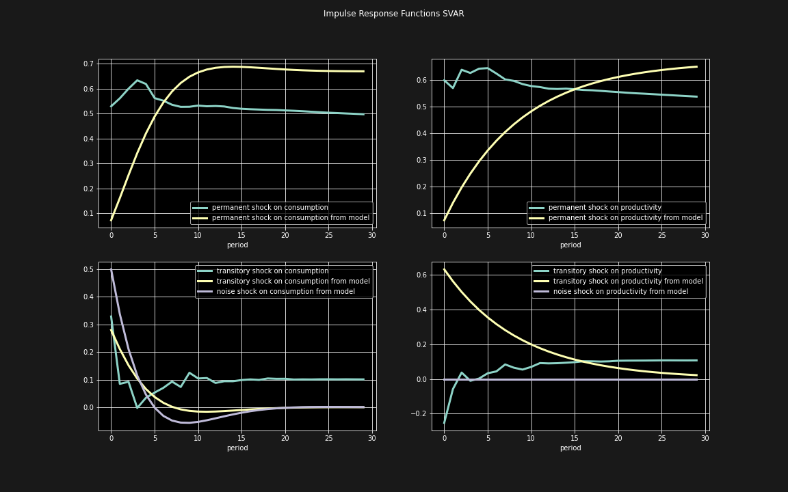
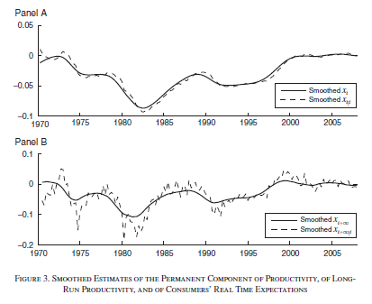
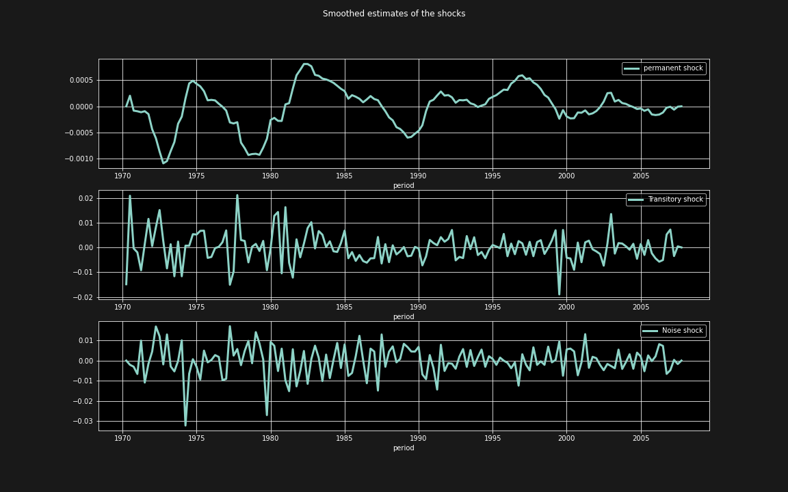

<!doctype html>
<html lang="en">

	<head>
		<meta charset="utf-8">

		<title>reveal.js - Class 4</title>

		<link rel="stylesheet" href="plugin/reveal.css">
		<link rel="stylesheet" href="plugin/black2.css" id="theme">
        <link rel="stylesheet" href="plugin/monokai.css">
        <link rel="stylesheet" href="plugin/title-footer.css">
       
	</head>

	<body>

		<div class="reveal">

			<div class="slides">


                <!-- Slides are separated by three dashes (quick 'n dirty regular expression) -->
                <section data-markdown data-separator="\n---\n" data-separator-vertical="^\n--\n$">
                    <script type="text/template">
                        <!-- .slide: style="text-align: left;" -->
                        ## Empirical Macroeconomics
                        ### Francesco Franco - Nova SBE
                        #### T4 2022 
                        ---

                        <!-- .slide: style="text-align: left;" -->
                        ### Kalman Filter

                        #### Derivation
                        
                        Consider a simple State Space Model (SSM)
                        
                        `$$\begin{aligned}
                        S_{t+1} & =AS_{t}+B\eta_{t+1}\\
                        X_{t} & =CS_{t}\end{aligned}$$` where $S_{t}$ is the state vector
                        (unobservable variables like the factors in our previous paper),
                        $\eta_{t}$ are the shocks to the states and $X_{t}$ are observables
                        variables.
                        
                        ---

                        <!-- .slide: style="text-align: left;" -->

                        #### Forecasts Based on Linear projection

                        Define the linear least square forecats of the state vector on the basis
                        of the data observed,
                        `$$\hat{S}_{t+1|t}=E\left(S_{t+1}|\mathcal{X}_{t}\right)$$` is the linear
                        projection of $S_{t+1}$ on
                        `$\mathcal{X}_{t}=\left(X_{t}',X_{t-1}',...X_{1}'\right)$`. The Kalman
                        calculates recursively `$\hat{S}_{1|0},\hat{S}_{2|1,...}\hat{S}_{T|T-1}$`
                        in succession. Associated with each forecast there is a MSE
                        `$$\Sigma_{t+1,t}=E\left(\left(S_{t+1}-\hat{S}_{t+1|t}\right)\left(S_{t+1}-\hat{S}_{t+1|t}\right)\right).$$`

                        ---

                        <!-- .slide: style="text-align: left;" -->

                        #### Forecasts Based on Linear projection

                        Linear projection: `$$\hat{Y}_{t+1|t}=\alpha'\mathcal{Z}_{t}$$` where
                        $\alpha$ is such that the forecast error
                        `$$E\left(\left(Y_{t+1}-\alpha'\mathcal{Z}_{t}\right)\mathcal{Z}_{t}'\right)=0'$$`
                        is uncorrelated with `$\mathcal{Z}_{t}$`. (smallest mean squared error
                        among linear forecasting rules). Notice
                        `$$E\left(Y_{t+1}\mathcal{Z}_{t}'\right)=\alpha'E\left(\mathcal{Z}_{t}\mathcal{Z}_{t}'\right)$$`
                        which implies
                        `$$\alpha'=E\left(Y_{t+1}\mathcal{Z}_{t}'\right)\left[E\left(\mathcal{Z}_{t}\mathcal{Z}_{t}'\right)\right]^{-1}$$`
                        Notice similarity with OLS formula. However it is constructed with
                        Population moments while OLS with sample moments.
                        ---

                        <!-- .slide: style="text-align: left;" -->

                        #### Updating a linear projection

                        You have obtained $\alpha$ through the Linear projection:
                        `$$\hat{Y}_{t+1|t}=\alpha'\mathcal{Z}_{t}=E\left(Y_{t+1}\mathcal{Z}_{t}'\right)\left[E\left(\mathcal{Z}_{t}\mathcal{Z}_{t}'\right)\right]^{-1}\mathcal{Z}_{t}$$`
                        write it as `$P\left(Y_{t+1}|\mathcal{Z}_{t}\right)$`. Now you receive new
                        information `$W_{t}$` that you can use to update the forecast. You can
                        show that the new forecast is
                        `$$\begin{aligned}
                        P\left(Y_{t+1}|\mathcal{Z}_{t},W_{t}\right) & =P\left(Y_{t+1}|\mathcal{Z}_{t}\right)\\
                         & +E\left\{ \left[Y_{t+1}-P\left(Y_{t+1}|\mathcal{Z}_{t}\right)\right]\left[W_{t}-P\left(W_{t}|\mathcal{Z}_{t}\right)\right]\right\} \\
                         & \times\left[E\left\{ \left[W_{t}-P\left(W_{t}|\mathcal{Z}_{t}\right)\right]\left[W_{t}-P\left(W_{t}|\mathcal{Z}_{t}\right)\right]'\right\} \right]^{-1}\\
                         & \times\left[W_{t}-P\left(W_{t}|\mathcal{Z}_{t}\right)\right]\end{aligned}$$`
                        Which intuitively add to the projection on the initial information a
                        term which is the linear projection the initial projection error on the
                        projection error of obtained by projecting the new information on the
                        initial information.

                        ---

                        <!-- .slide: style="text-align: left;" -->
                        
                        ### Kalman Filter Derivation

                        #### Start the Recursion
                        
                        Start with the unconditional mean of the States:
                        `$$\hat{S}_{1|0}=E\left(S_{1}\right)$$` and the associated MSE
                        `$$\Sigma_{1,0}=E\left(\left(S_{1}-\hat{S}_{1|0}\right)\left(S_{1}-\hat{S}_{1|0}\right)'\right)$$`
                        The initial values can be motivated by the property of the model or be
                        guesses.

                        ---

                        <!-- .slide: style="text-align: left;" -->

                        #### Forecasting $X_{t}$
                        
                        with conditional mean of the States:
                        `$$\hat{X}_{t|t-1}=E\left(X_{t}|\mathcal{X}_{t-1}\right)=C\hat{S}_{t|t-1}$$`
                        

                        ---

                        <!-- .slide: style="text-align: left;" -->

                        #### Forecasting $X_{t}$
                        
                        The error of the forecast:
                        `$$X_{t}-\hat{X}_{t|t-1}=CS_{t}-C\hat{S}_{t|t-1}$$`
                        
                        The variance of the the forecast error:
                        
                        `$$\begin{aligned}
                        E\left[\left(X_{t}-\hat{X}_{t|t-1}\right)\left(X_{t}-\hat{X}_{t|t-1}\right)'\right] & =E\left[C\left(S_{t}-\hat{S}_{t|t-1}\right)\left(C\left(S_{t}-\hat{S}_{t|t-1}\right)\right)'\right]\\
                         & =C\Sigma_{t|t-1}C'\end{aligned}$$`
                        


                        ---

                        <!-- .slide: style="text-align: left;" -->

                        #### Updating $S_{t}$
                        
                        We can now update our inference of $S_{t}$ using $X_{t}$,
                        `$\hat{S}_{t|t}=E\left(S_{t}|\mathcal{X}_{t-1},X_{t}\right)$` using
                        the formula to update a linear projection
                        
                        `$\hat{S}_{t|t}=\hat{S}_{t|t-1}+ \\
                         E\left[\left(S_{t}-\hat{S}_{t|t-1}\right)\left(X_{t}-\hat{X}_{t|t-1}\right)'\right]
                         E\left[\left(X_{t}-\hat{X}_{t|t-1}\right)\left(X_{t}-\hat{X}_{t|t-1}\right)'\right]^{-1}
                         \left(X_{t}-\hat{X}_{t|t-1}\right)$`
                        
                        
                        ---

                        <!-- .slide: style="text-align: left;" -->

                        #### Updating $S_{t}$
                        
                        Notice the terms of the big matrix of the projection:
                        `$E\left[\left(S_{t}-\hat{S}_{t|t-1}\right)\left(X_{t}-\hat{X}_{t|t-1}\right)'\right]=E\left[\left(S_{t}-\hat{S}_{t|t-1}\right)\left(C\left(S_{t}-\hat{S}_{t|t-1}\right)\right)'\right]=\Sigma_{t,t-1}C'$`
                        and the second is the variance of the the forecast error
                        `$$E\left[\left(X_{t}-\hat{X}_{t|t-1}\right)\left(X_{t}-\hat{X}_{t|t-1}\right)'\right]^{-1}=\left[C\Sigma_{t,t-1}C'\right]^{-1}$$`
                        Therefore
                        `$$\hat{S}_{t|t}=\hat{S}_{t|t-1}+\Sigma_{t,t-1}C'\left[C\Sigma_{t,t-1}C'\right]^{-1}\left(X_{t}-C\hat{S}_{t|t-1}\right)$$`
                        ---

                        <!-- .slide: style="text-align: left;" -->

                        #### Updating $\Sigma_{t}$

                        Now you can update :
                        `$\Sigma_{t|t}=E\left[\left(S_{t}-\hat{S}_{t|t}\right)\left(S_{t}-\hat{S}_{t|t}\right)'\right]$`
                        which using the previous results gives
                        `$$\Sigma_{t|t}=\Sigma_{t|t-1}-\Sigma_{t|t-1}C'\left[C\Sigma_{t,t-1}C'\right]^{-1}C\Sigma_{t|t-1}$$
                        ---

                        <!-- .slide: style="text-align: left;" -->

                        #### Forecasting $S_{t}$

                        We can now forecast $S_{t+1}$ using our forecast of $S_{t}$ based on information at time $t$:
                        
                        `$$\hat{S}_{t+1|t}=A\hat{S}_{t|t}$$`
                        now 
                        `$$\hat{S}_{t+1|t}=A\hat{S}_{t|t-1}+A\Sigma_{t,t-1}C'\left[C\Sigma_{t,t-1}C'\right]^{-1}\left(X_{t}-C\hat{S}_{t|t-1}\right)$$`
                        `$$\hat{S}_{t+1|t}=A\hat{S}_{t|t-1}+K_{t}\left(X_{t}-C\hat{S}_{t|t-1}\right)$$`
                        `$$\hat{S}_{t+1|t}=\left(A-K_{t}C\right)\hat{S}_{t|t-1}+K_{t}X_{t}$$`
                        
                        where $K_{t}=A\Sigma_{t,t-1}C'\left[C\Sigma_{t,t-1}C'\right]^{-1}$ is known as the gain matrix

                        ---

                        <!-- .slide: style="text-align: left;" -->

                        
                        #### MSE of the Forecast $S_{t}$

                        Now that we have `$\hat{S}_{t+1|t}$` we van compute $\Sigma_{t+1|t}$ (Big
                        matrix) `$$\begin{aligned}
                        \Sigma_{t+1|t} & =E\left[\left(S_{t+1}-\hat{S}_{t+1|t}\right)\left(S_{t+1}-\hat{S}_{t+1|t}\right)'\right]\\
                        \Sigma_{t+1|t} & =E\left[\left(AS_{t}+B\eta_{t+1}-A\hat{S}_{t|t}\right)\left(AS_{t}+B\eta_{t+1}-A\hat{S}_{t|t}\right)'\right]\\
                        \Sigma_{t+1|t} & =A\Sigma_{t|t}A'+B\Sigma_{\eta}B'\\
                        \Sigma_{t+1|t} & =\left(A-K_{t}C'\right)\Sigma_{t|t-1}\left(A'-CK'_{t}\right)+B\Sigma_{\eta}B'\end{aligned}$$`
                        and we have the values to start the next iteration. Iterating we obtain
                        `$\left\{ \hat{S}_{t+1|t}\right\} _{t=0}^{T}$` which are called the
                        filtered values of the states.
                        
                        
                        ---

                        <!-- .slide: style="text-align: left;" -->

                        #### Kalman with Noise

                        You can extend the State Space Model (SSM) to noise in the obervations
                        
                        `$$\begin{aligned}
                        S_{t+1} & =AS_{t}+B\eta_{t+1}\\
                        X_{t} & =CS_{t}+Dv_{t}\end{aligned}$$` The formulas now must take into
                        account the noise in the forecast error of $X_{t}$. Let $R=D\Omega D'$
                        where $\Omega$ is the covariance of $v_{t}$
                        `$$E\left[\left(X_{t}-\hat{X}_{t|t-1}\right)\left(X_{t}-\hat{X}_{t|t-1}\right)'\right]=C\Sigma_{t|t-1}C'+R$$`
                        
                        ---

                        <!-- .slide: style="text-align: left;" -->

                        ### Paper: News and Noise shocks In Macroeconomics

                        #### DGP of the productivity process and signal
                        
                        Let productivity $a_{t}$ be the sum of a transitory and a permanent
                        component $$a_{t}=x_{t}+z_{t}$$
                        `$$\Delta x_{t}=\rho_{x}\Delta x_{t-1}+\eta_{x,t}$$`
                        `$$z_{t}=\rho_{z}z_{t-1}+\eta_{z,t}$$` the agents observe only $a_{t}$ and
                        a noisy signal on $x_{t}$ `$$s_{t}=x_{t}+v_{t}$$


                        ---

                        <!-- .slide: style="text-align: left;" -->

                        ### Properties the observed process

                        #### Special case
                        
                        Consider the variance of $\Delta a_{t}=\Delta x_{t}+\Delta z_{t}$
                        
                        `$$\begin{aligned}
                        Var\left[\Delta a_{t}\right] & =\frac{1}{1-\rho_{x}^{2}}\sigma_{\epsilon}^{2}+\frac{2}{1+\rho_{z}}\sigma_{\eta}^{2}\\
                        Cov\left[\Delta a_{t},\Delta a_{t-j}\right] & =\rho_{x}^{j}\frac{1}{1-\rho_{x}^{2}}\sigma_{\epsilon}^{2}-\rho_{z}^{j-1}\frac{1-\rho_{z}}{1+\rho_{z}}\sigma_{\eta}^{2}\end{aligned}$$`
                        by setting
                        `$\rho_{x}^{j}\frac{1}{1-\rho_{x}^{2}}\sigma_{\epsilon}^{2}=\rho_{z}^{j-1}\frac{1-\rho_{z}}{1+\rho_{z}}\sigma_{\eta}^{2}$`
                        namely $\rho_{x}=\rho_{z}=\rho$ and
                        $\rho\sigma_{\epsilon}^{2}=(1-\rho)^{2}\sigma_{\eta}^{2}$ you obtain
                        that the productivity is a random walk.


                        ---

                        <!-- .slide: style="text-align: left;" -->

                        ### Economic model

                        #### Limit NKM with frequency of price adjustment goes to zero
                        
                        The model is `$$c_{t}=lim_{j\rightarrow\infty}E_{t}\left[a_{t+j}\right]$$`
                        Output is determined by consumption $$y_{t}=c_{t}$$ and employment
                        $$n_{t}=y_{t}-a_{t}$$
                        


                        ---

                        <!-- .slide: style="text-align: left;" -->

                        ### Closing the model

                        #### Equilibrium from the long run expecaction 
                        
                        Using the process of $\Delta x_{t}=\rho\Delta x_{t-1}+\eta_{x,t}$
                        `$$E_{t}\left[x_{t+1}-x_{t}\right]=\rho E_{t}\left[x_{t}-x_{t-1}\right]$$`
                        `$$E_{t}\left[x_{t+2}-x_{t+1}\right]=\rho E_{t}\left[x_{t+1}-x_{t}\right]$$`
                        `$$E_{t}\left[x_{t+2}\right]=\left(1+\rho+\rho^{2}\right)E_{t}\left[x_{t}\right]-(1+\rho)\rho E_{t}\left[x_{t-1}\right]$$`
                        `$$E_{t}\left[x_{t+3}\right]=\left(1+\rho+\rho^{2}+\rho^{3}\right)E_{t}\left[x_{t}\right]-\rho\left(1+\rho+\rho^{2}\right)E_{t}\left[x_{t-1}\right]$$`
                        `$$lim_{j\rightarrow\infty}E_{t}\left[x_{t+j}\right]=\frac{1}{1-\rho}\left(E_{t}\left[x_{t}\right]-\rho E_{t}\left[x_{t-1}\right]\right)$$`
                        
                        

                        ---

                        <!-- .slide: style="text-align: left;" -->

                        ### Closing the model

                        #### Equilibrium
                        
                        `$$c_{t}=\frac{1}{1-\rho}\left(E_{t}\left[x_{t}\right]-\rho E_{t}\left[x_{t-1}\right]\right)$$`
                        and shows that the agent need to form an expectation on
                        `$E_{t}\left[x_{t}\right]$ and $E_{t}\left[x_{t-1}\right]$`. Remember that
                        $x_{t}$ is not observed.

                        
                        
                        ---

                        <!-- .slide: style="text-align: left;" -->

                        ### Find the expectations
                        
                        #### Express the model in State Space form
                        
                        The agent's have $S_{t}=\left(x_{t},x_{t-1},z_{t}\right)'$ and
                        $X_{t}=\left(a_{t},s_{t}\right)$: `$$\begin{aligned}
                        S_{t} & =AS_{t-1}+B\eta_{t}\\
                        X_{t} & =CS_{t}+Dv_{t}\end{aligned}$$`
                        
                        ---

                        <!-- .slide: style="text-align: left;" -->

                        ### Find the expectations
                        
                        #### Express the model in State Space form
                        
                        The consumer filtering problem (the consumer solves a signal extraction
                        problem to form expectations, notice also the shocks are not recoverable from the states because the system is rectangular): `$$S_{t}=\left[\begin{array}{c}
                        x_{t}\\
                        x_{t-1}\\
                        z_{t}
                        \end{array}\right]=\begin{bmatrix}1+\rho & -\rho & 0\\
                        1 & 0 & 0\\
                        0 & 0 & \rho
                        \end{bmatrix}S_{t-1}+\begin{bmatrix}1 & 0\\
                        0 & 0\\
                        0 & 1
                        \end{bmatrix}\left[\begin{array}{c}
                        \epsilon_{t}\\
                        \eta_{t}
                        \end{array}\right]$$` `$$X_{t}=\begin{bmatrix}a_{t}\\
                        s_{t}
                        \end{bmatrix}=\begin{bmatrix}1 & 0 & 1\\
                        1 & 0 & 0
                        \end{bmatrix}S_{t}+\begin{bmatrix}0\\
                        1
                        \end{bmatrix}v_{t}$$`
                        
                        ---

                        <!-- .slide: style="text-align: left;" -->

                        ### Find the expectations
                        
                        #### Initialization for non stationary processes
                        
                        The intial state is `$$\hat{S}_{1|0}=\left(\begin{array}{c}
                        0\\
                        0\\
                        0
                        \end{array}\right)+\left(\begin{array}{cc}
                        1 & 0\\
                        0 & 1\\
                        0 & 0
                        \end{array}\right)\delta+\begin{bmatrix}0\\
                        0\\
                        1
                        \end{bmatrix}\eta_{0}$$` where $\eta_{0}=z_{1}\sim N\left(0,Q_{0}\right)$
                        and $Q_{0}=\frac{\sigma_{\eta}^{2}}{1-\rho^{2}}$ therefore
                        `$$\Sigma_{1|0}=\kappa\Sigma_{\infty}+\Sigma_{*}$$` where
                        `$\Sigma_{\infty}=\left[\begin{array}{ccc}
                        1 & 0 & 0\\
                        0 & 1 & 0\\
                        0 & 0 & 0
                        \end{array}\right]$ and $\Sigma_{*}=\left[\begin{array}{ccc}
                        0 & 0 & 0\\
                        0 & 0 & 0\\
                        0 & 0 & Q_{0}
                        \end{array}\right]$`
                        
                        ---

                        <!-- .slide: style="text-align: left;" -->

                        ### Find the expectations
                        
                        #### Solve the signal extraction problem 
                        
                        The above Kalman gives you values for
                        `$\hat{S}_{t|t-1}\ and\ \hat{S}_{t|t}$`. Here we are interested in the
                        latter `$\hat{S}_{t|t}=\left[\begin{array}{c}
                        \hat{x}_{t|t}\\
                        \hat{x}_{t-1|t}\\
                        \hat{z}_{t|t}
                        \end{array}\right]$`.
                        
                        ---

                        <!-- .slide: style="text-align: left;" -->

                        ### Simulate the model
                        
                        #### Consumer solution
                        
                        The consumer problem has the following solution:
                        `$$S_{t}^{e}=\left[\begin{array}{c}
                        x_{t}\\
                        x_{t-1}\\
                        z_{t}\\
                        \hat{x}_{t|t}\\
                        \hat{x}_{t-1|t}\\
                        \hat{z}_{t|t}
                        \end{array}\right]=\begin{bmatrix}A & 0\\
                        KCA & \left(I-KC\right)A
                        \end{bmatrix}S_{t-1}^{e}+\begin{bmatrix}B & 0\\
                        KCB & KD
                        \end{bmatrix}\left[\begin{array}{c}
                        \epsilon_{t}\\
                        \eta_{t}\\
                        v_{t}
                        \end{array}\right]$$ $$X_{t}^{e}=\begin{bmatrix}a_{t}\\
                        c_{t}
                        \end{bmatrix}=\begin{bmatrix}1 & 0 & 1 & 0 & 0 & 0\\
                        0 & 0 & 0 & \frac{1}{1-\rho} & -\frac{\rho}{1-\rho} & 0
                        \end{bmatrix}S_{t}^{e}$$`
                        
                        ---

                        <!-- .slide: style="text-align: left;" -->

                        ### Solution
                        
                        #### IRF
                        
                        <center></center> 
                        
                        ---

                        <!-- .slide: style="text-align: left;" -->

                        ### Reduced Form VAR
                        
                        #### Revovering the shocks
                        
                        The VAR represntation of the model is
                        
                        $c_{t}=lim_{j\rightarrow\infty}E_{t}\left[a_{t+j}\right]$,$c_{t+1}=lim_{j\rightarrow\infty}E_{t+1}\left[a_{t+1+j}\right]$
                        implies $c_{t}=E_{t}\left[c_{t+1}\right]$ `$$\begin{aligned}
                        c_{t} & =c_{t-1}+u_{t}^{c}\\
                        a_{t} & =\rho a_{t-1}+(1-\rho)c_{t-1}+u_{t}^{a}\end{aligned}$$` The
                        univariate representation of productivity is a random walk, by
                        assumption. But in the multivariate representation, past consumption
                        helps to predict productivity.
                        
                        ---

                        <!-- .slide: style="text-align: left;" -->

                        ### Reduced Form VAR
                        
                        #### Revovering the shocks
                        
                        When $\sigma_{v}=0$ the VAR represntation of the model is
                        `$$\begin{aligned}
                        c_{t} & =c_{t-1}+\frac{1}{1-\rho}\epsilon_{t}\\
                        a_{t} & =\rho a_{t-1}+(1-\rho)c_{t-1}+\epsilon_{t}+\eta_{t}\end{aligned}$$`
                        When $\sigma_{v}\rightarrow\infty$ the VAR representation of the model is
                        `$$\begin{aligned}
                        c_{t} & =c_{t-1}+u_{t}\\
                        a_{t} & =a_{t-1}+u_{t}\end{aligned}$$`
                        
                        ---

                        <!-- .slide: style="text-align: left;" -->

                        ### SVAR
                        
                        #### Revovering the shocks with BQ decomposition
                        
                        <center></center> 
                        

                        
                        ---


                        <!-- .slide: style="text-align: left;" -->

                        ### Reduced Form VAR
                        
                        #### Revovering the shocks
                        
                        Can you recover the structural shocks? without noise yes. otherwise
                        no.The reason is that agents' decisions are functions of their
                        expectations, so even if the econometrician observes the three variables
                        $(c,a,s)$, the first variable is a function of the other two, which
                        implies that there are only two independent innovations driving the
                        system. But you can estimate the structural model to which we now turn.
                        
                        ---

                        <!-- .slide: style="text-align: left;" -->

                        ### Matching moments
                        
                        #### Revovering the parameters
                        
                        You can recover $\rho$ from `$$\begin{aligned}
                        a_{t} & =\rho a_{t-1}+(1-\rho)c_{t-1}+u_{t}^{a}\\
                        \Delta a_{t} & =\left(1-\rho\right)\left(c_{t-1}-a_{t-1}\right)+u_{t}^{a}\end{aligned}$$`
                        notice you can exploit the correlation of productivity growth and
                        consumption at different horizons
                        `$$a_{t+j}-a_{t}=\left(1-\rho^{j}\right)\left(c_{t-1}-a_{t-1}\right)+u_{t}^{a,j}$$`
                        
                        ---

                        <!-- .slide: style="text-align: left;" -->

                        ### Matching moments
                        
                        #### Revovering the parameters
                        
                        Using the representation of $a_{t}$ we get `$$\begin{aligned}
                        \sigma_{\epsilon}^{2} & =Var\left[\Delta a_{t}\right]\left(1-\rho\right)^{2}\\
                        \sigma_{\eta}^{2} & =Var\left[\Delta a_{t}\right]\rho\end{aligned}$$`
                        finally to recover $\sigma_{v}$ they exploit the correlation between
                        $u_{t}^{a}$ and $\Delta c_{t}$
                        
                        ---

                        <!-- .slide: style="text-align: left;" -->

                        ### Maximum Likelihood
                        
                        #### Revovering the parameters
                        
                        Solve the agents signal extraction and next build the econometrician's
                        Kalman Filter including in the list of unobservable state variables the
                        consumer's expectations.
                        
                        ---

                        <!-- .slide: style="text-align: left;" -->

                        ### Kalman for the econometrician
                        
                        #### Econometrician
                        
                        The econometrician has `$S_{t}^{e}=\left(S_{t},\hat{S}_{t|t}\right)'$` and
                        $X_{t}^{e}=\left(a_{t},c_{t}\right)$: `$$S_{t}^{e}=\left[\begin{array}{c}
                        x_{t}\\
                        x_{t-1}\\
                        z_{t}\\
                        \hat{x}_{t|t}\\
                        \hat{x}_{t-1|t}\\
                        \hat{z}_{t|t}
                        \end{array}\right]=\begin{bmatrix}A & 0 & 0\\
                        KCA & \left(I-KC\right)A & 0
                        \end{bmatrix}S_{t-1}^{e}+\begin{bmatrix}B & 0\\
                        KCB & KD
                        \end{bmatrix}\begin{bmatrix}\epsilon_{t}\\
                        \eta_{t}\\
                        v_{t}
                        \end{bmatrix}$$ $$X_{t}^{e}=\begin{bmatrix}a_{t}\\
                        c_{t}
                        \end{bmatrix}=\begin{bmatrix}1 & 0 & 1 & 0 & 0 & 0 & 0\\
                        0 & 0 & 0 & \frac{1}{1-\rho} & -\frac{\rho}{1-\rho} & 0 & 0
                        \end{bmatrix}S_{t}^{e}$$`
                        
                        ---

                        <!-- .slide: style="text-align: left;" -->

                        ### The Likelihood
                        
                        #### using the Kalman filter
                        
                        If the inital state $S_{1}$ and $\eta_{t}$ and $v_{t}$ are multivariate
                        Gaussian we have:
                        `$$f(X_{t}|X_{t-1},X_{t-2},...)\sim N\left(C\hat{S}_{t|t-1},C\Sigma_{t|t-1}C'+D\Sigma_{v}D'\right)\,for\,t=1,2,...,T$$`
                        from which you can compute the sample log likelihhod and maximize wrt to
                        $A,B,C,D,\Sigma,\Sigma_{v}$
                        
                        ---

                        <!-- .slide: style="text-align: left;" -->

                        ### Smoothing
                        
                        #### Forming an inference based on the sample
                        
                        In some application we are interested in having an inference os $S_{t}$
                        based on the full sample, `$$\hat{S}_{t|T}=E\left[S_{t}|X_{T}\right]$$` to
                        do obtain it you need to compute the filtered quantities (above)
                        `$\hat{S}_{t|t},\hat{S}_{t+1|t},\Sigma_{t|t},\Sigma_{t+1|t}$` and then
                        `$$\hat{S}_{T-1|T}=\hat{S}_{T-1|T-1}+J_{T-1}\left(\hat{S}_{T|T}-\hat{S}_{T|T-1}\right)$$`
                        where $J_{T-1}=\Sigma_{T-1|T-1}A'\Sigma_{T|T-1}^{-1}$ and proceed
                        backwards. You can also compute the MSE assciated with the smoothed
                        estimates.
                        
                        ---

                        <!-- .slide: style="text-align: left;" -->

                        ### Smoothing
                        
                        <center></center> 
                        
                        ---

                        <!-- .slide: style="text-align: left;" -->

                        ### Smoothing
                        
                        <center></center> 
                        

                        

                    </script>
                </section>

            </div>
		</div>

		<script src="plugin/reveal.js"></script>
        <script src="plugin/markdown.js"></script>
        <script src="plugin/highlight.js"></script>
        <script src="plugin/notes.js"></script>
        <script src="plugin/plugin.js"></script>
        <script src="plugin/math.js"></script>
        <script src="plugin/plugin.js"></script>
        <script src="plugin/menu.js"></script>
        <script src="plugin/pdfexport.js"></script>
		<script>

			Reveal.initialize({
				controls: true,
				progress: true,
				history: true,
                center: true,
                touch: true,
                dependencies:
                [
                    { src: 'plugin/title-footer.js', async: true, callback: function() { title_footer.initialize(); } }
                ],
                math: {
                    mathjax: 'https://cdn.jsdelivr.net/gh/mathjax/mathjax@2.7.8/MathJax.js',
                    config: 'TeX-AMS_HTML-full',
                    // pass other options into `MathJax.Hub.Config()`
                    TeX: { Macros: { RR: "{\\bf R}" } }
                    },
        
                chalkboard: {
                    boardmarkerWidth: 3,
                    chalkWidth: 2.5,
                    chalkEffect: 1,
                    src: null,
                    readOnly: undefined,
                    toggleChalkboardButton: { left: "90px", bottom: "30px", top: "auto", right: "auto" },
                    toggleNotesButton: { left: "60px", bottom: "30px", top: "auto", right: "auto" },
                    transition: 800,
                    theme: "chalkboard",
                    background: [ 'rgba(127,127,127,.1)' , path + 'img/blackboard.png' ],
                    grid: { color: 'rgb(50,50,10,0.5)', distance: 80, width: 2},
                    eraser: { src: path + 'img/sponge.png', radius: 20},
                    boardmarkers : [
                            { color: 'rgba(255,255,255,1)', cursor: 'url(' + path + 'img/boardmarker-black.png), auto'},
                            { color: 'rgba(30,144,255, 1)', cursor: 'url(' + path + 'img/boardmarker-blue.png), auto'},
                            { color: 'rgba(220,20,60,1)', cursor: 'url(' + path + 'img/boardmarker-red.png), auto'},
                            { color: 'rgba(50,205,50,1)', cursor: 'url(' + path + 'img/boardmarker-green.png), auto'},
                            { color: 'rgba(255,140,0,1)', cursor: 'url(' + path + 'img/boardmarker-orange.png), auto'},
                            { color: 'rgba(150,0,20150,1)', cursor: 'url(' + path + 'img/boardmarker-purple.png), auto'},
                            { color: 'rgba(255,220,0,1)', cursor: 'url(' + path + 'img/boardmarker-yellow.png), auto'}
                    ],
                    chalks: [
                            { color: 'rgba(255,255,255,0.5)', cursor: 'url(' + path + 'img/chalk-white.png), auto'},
                            { color: 'rgba(96, 154, 244, 0.5)', cursor: 'url(' + path + 'img/chalk-blue.png), auto'},
                            { color: 'rgba(237, 20, 28, 0.5)', cursor: 'url(' + path + 'img/chalk-red.png), auto'},
                            { color: 'rgba(20, 237, 28, 0.5)', cursor: 'url(' + path + 'img/chalk-green.png), auto'},
                            { color: 'rgba(220, 133, 41, 0.5)', cursor: 'url(' + path + 'img/chalk-orange.png), auto'},
                            { color: 'rgba(220,0,220,0.5)', cursor: 'url(' + path + 'img/chalk-purple.png), auto'},
                            { color: 'rgba(255,220,0,0.5)', cursor: 'url(' + path + 'img/chalk-yellow.png), auto'}
                    ]
                },
                

				plugins: [ RevealMarkdown, RevealHighlight, RevealNotes,RevealMath, RevealMenu, RevealChalkboard, PdfExport]
			});

		</script>

	</body>
</html>
